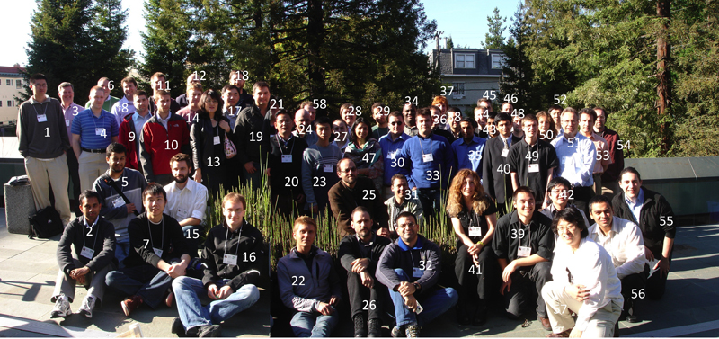

Eighth Biennial Ptolemy Miniconference
Thursday, April 16, 2009, Berkeley, California
Eighth Biennial Ptolemy MiniconferenceThursday, April 16, 2009, Berkeley, California |
|

(Photo by Ustun Yildiz) - Different version of the photo, stitched by Thomas Huining Feng| 1 | 2 | Manish Kumar Anand | 3 | Jack Wenstrand | |
| 4 | Warren Geiler | 5 | Faraaz Sareshwala | 6 | Thomas Mandl |
| 7 | Man-Kit (Jackie) Leung | 8 | Adam Cataldo | 9 | Mike Manno |
| 10 | Brian Hudson | 11 | Aaron Schultz | 12 | Mathias Weske |
| 13 | Mee Young Sung | 14 | Sean Riddle | 15 | Derik Barseghian |
| 16 | Daniel Zinn | 17 | Jie Liu | 18 | Stephen Neuendorffer |
| 19 | Jose Pino | 20 | Jun Zeng | 21 | James Chiahau Yeh |
| 22 | Ben Leinfelder | 23 | Thomas Huining Feng | 24 | Alan Kamas |
| 25 | Edward A. Lee | 26 | Christopher Brooks | 27 | Elizabeth Latronico |
| 28 | Darryl Koivisto | 29 | Eleftherios Matsikoudis | 30 | Jörn Janneck |
| 31 | Stavros Tripakis | 32 | Ricardo Gonzalez | 33 | Ustun Yildiz |
| 34 | Charles Shelton | 35 | 36 | Slobodan Matic | |
| 37 | Ben Lickly | 38 | Hugo Andrade | 39 | Isaac Liu |
| 40 | Nimish Sane | 41 | Mary Stewart | 42 | Qi Zhu |
| 43 | 44 | 45 | |||
| 46 | 47 | 48 | Duarte Vieira | ||
| 49 | Bert Rodiers | 50 | Patricia Derler | 51 | Bertram Ludaescher |
| 52 | 53 | Stefan Resmerita | 54 | Tim McPhilipps | |
| 55 | Hauke Fuhrmann | 56 | Hiren Patel | 57 | Jia Zou |
| 58 | Kimmo Kuusilinna |
The Eighth Biennial Ptolemy Miniconference was held on Thursday, April 16, 2009 at the University of California, Berkeley in the Wozniak Lounge, 4th Floor Soda Hall. We had 76 attendees from 37 different organizations spanning at least 10 countries.
(Note that Cyber-Physical Systems Week was held in San Francisco earlier in the week.)
| Note: We applied for and received an Opportunity Award from the UC Discovery Grant program to cover the costs of the tutorial and miniconference. |
On Wednesday, April 15, 2009, we held a tutorial for Java programmers interested in hands-on learning about Ptolemy.
The Ptolemy project studies modeling, simulation, and design of concurrent, real-time, embedded systems. The focus is on assembly of concurrent components.
The Ptolemy Miniconference is an opportunity for research collaborators and Ptolemy users and extenders from industry, academia, and government to get together, present their work to the Ptolemy community, and hear about related research and results. It is typically held every two years.
We again asked the Kepler community to give presentations and posters. Kepler is a cross-project collaboration to develop open source tools for Scientific Workflows and is currently based on the Ptolemy II system for heterogeneous concurrent modeling and design.
In addition, the miniconference acted as an annual meeting for the Center for Hybrid and Embedded Software Systems.
The presentations from the miniconference are available.
At miniconferences in the past we have had presentations and posters from organizations worldwide, plus members of the Ptolemy project describing current research at Berkeley.
Topics of interest for this year included:
Please direct questions to ptconf09 at ptolemy eecs berkeley edu